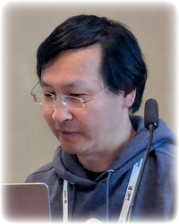
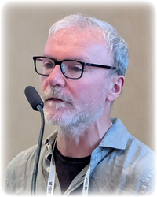

Representing the true signatures of kernel functions
Optimizing compilers can, under some circumstances, infer when a parameter to a function is not needed, and remove it. This is all well and good until the kernel's tracing or BPF subsystems need information on how to call the function or where its arguments are stored. Alan Maguire and Yonghong Song spoke at the 2026 Linux Storage, Filesystem, Memory-Management, and BPF Summit about their work on recording information regarding changed function signatures in the kernel's BTF debugging information, to better support tracing such functions.
Song opened with three examples of ways that an optimizing compiler can transform a function's signature, each taken from the actual kernel. Here are simplified versions; the full examples can be seen in the slides. Firstly, an argument can simply be removed in its entirety:
int something(int flags);
// becomes
int something();
Alternatively, if a function takes a structure as an argument, but only uses some of its fields, those fields can be extracted from the structure and passed on their own:
typedef struct {
int field1;
int field2; // Not used
} structure;
void something(structure foo);
// becomes
void something(int field1);
Finally, if a function takes a pointer to a structure but does not mutate the structure, it can be passed by value instead. This can be worthwhile on its own merits if the structure is small (avoiding an extra load from memory), but it can also enable opportunities for the previous optimization to apply.
void something(structure *flags);
// becomes
void something(structure flags);
Any code that is intended to accurately capture how optimized functions in the kernel are called needs to be able to handle these three cases. Together, they cover a large portion of the functions present in the kernel for which signature changes occur. The remaining functions are outliers in terms of complexity, and best addressed by follow-up work.

The DWARF debugging information format already has a way to represent these kinds of transformations, so when Song and Maguire started on this work in 2025, they thought of reusing that encoding. DWARF is intended to play a subtly different role, however: it represents the signatures of functions as they are in the source code, not as they are after optimization. Specifically, the DWARF data for a function argument describes how to find its value at run time. The tracing subsystem needs a different piece of information: what the type of an argument is at run time, so that it can reconstruct a representation of it for printing, or so that tracepoints can refer to and change arguments by name in a safe way. The DWARF maintainers rejected an extension to DWARF for that purpose on the grounds that the format is only intended for debugging information, however.
The necessary information on an optimized function's "true" signature (as Song calls it) is technically present in DWARF, but not in a usable way. Thus his current approach: teach the poke-a-hole (pahole) utility to reverse engineer the kernel's DWARF data and extract the true function signatures.
The core idea is to take the architecture's ABI, figure out how function arguments defined in the source code would be passed without optimization, and then check the DWARF information for discrepancies. The DW_AT_calling_convention annotation records what calling convention a given function uses; when Clang changes a function's signature during optimization, it sets the annotation to DW_CC_nocall to indicate that the function is called with a non-standard calling convention. Then, pahole walks through the DWARF information to find arguments that are passed in different registers than expected (or that are not passed at all) in order to reconstruct the changes to the signature. By focusing pahole's attention on functions that have the appropriate annotation, the process of reverse engineering the kernel's DWARF information can be made faster.
Out of 69,103 total kernel functions, 875 currently have their signatures changed by optimization. 532 of those are not currently represented in the kernel's BTF information at all, and 343 are represented incorrectly, Song said. With Song and Maguire's patches, only 18 total functions won't be able to be represented. Unfortunately, DWARF doesn't record whether function return values are changed in the same way as arguments, and there are problems with handling arguments passed on the stack, so there could still be problems with return values or functions with more than six arguments. Future work should be able to address both of those.

At that point, Maguire stepped up to speak about the GCC side of things. GCC indicates functions that have had their signatures changed by generating a new symbol name, but the same broad approach works for binaries it creates as well. José Marchesi warned that the symbol name is not a reliable indicator — some transformed functions do not receive a changed name, according to one of the other GCC maintainers. Marchesi didn't know the details, however, and encouraged Maguire to reach out to them to ask.
Another complication that Maguire has run into with GCC is functions that are inlined differently in separate call locations. Partially inlined functions have long been a source of complication for the kernel's BTF. Maguire went into more detail about the particulars of the problem and his potential solution in a session later in the conference.
Song raised the idea that, in the future, compilers could generate appropriate BTF information directly, without going via DWARF. The advantage is that compilers know exactly how they are changing function signatures, so there would be no risk of information lost in translation. Alexei Starovoitov liked the idea, since it would mean that the kernel community would not need to fight the DWARF standards, but wasn't sure how realistic it was. Ideally, a change to BTF would also work for Rust code (which implies it should work for link-time-optimized kernels as well, since CONFIG_RUST implies CONFIG_LTO). Starovoitov worried about the complexity, especially of deduplicating BTF declarations, but did think that extending BTF to handle more of the complexity was important. As the session wound down, the audience broke into scattered discussion about the particulars.
| Index entries for this article | |
|---|---|
| Kernel | BPF |
| Conference | Storage, Filesystem, Memory-Management and BPF Summit/2026 |